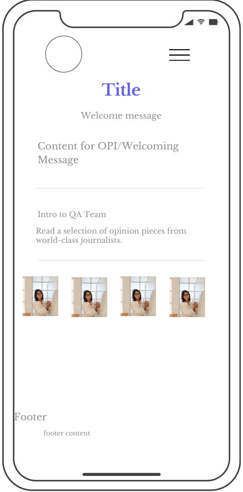
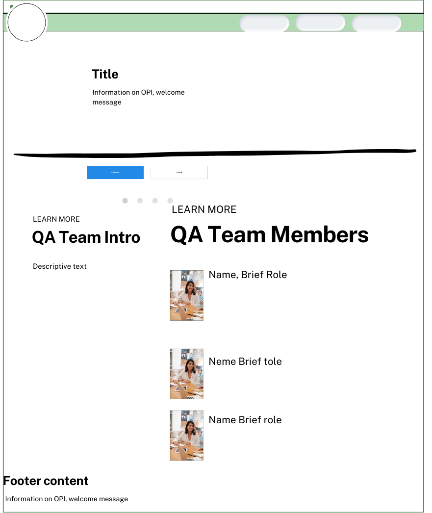

Site Name:
Interpreter Toolbox
Reasoning: I chose this name as it implies the purpose of the site
Optional domain availability: interpreter-toolbox.com (Available)
Site Purpose:
The "Interpreter Toolbox" aims to become a learning and an in-call goto tool to aid interpreters in their daily calls.
Scenarios:
The purspose will be to address common scenarios or questions such as:
- I need to find the best term for a word in a medical setting. Where can I find the one accepted in the industry?
- How do I handle a call where both the English and the non-English speaker are talking at the same time?
- What's the process I need to follow in case I encounter an unfamiliar term during a call?
Color Schema:
-
Primary Color: `#005A9C` (Professional Blue)
- Usage: Headings (h1,h2,h3), Navigation links, Key accents
-
Secondary Color: `#333333` (Dark Gray)
- Usage: Main body text
-
Background Color: `#F8F9FA` (Light Gray)
- Usage: Main page background for contrast
-
Accent Color: `#005A9C` (Subtle Gold/Yellow)
- Usage: Highlights, calls to action
Note: This site plan document utilizes the presented color schema
Typography:
Using Google fonts for a modern touch and to facilitate readiness
-
Heading Font: "Monserrat", sans-serif (Weight:700)
- Usage: Main site title (h1) and other subheadings
- Body Font: 'Lato', sans-serif (Weight: 400)
Wireframes
Wireframes outline the basic structure of the home page
Mobile View Wireframe (Home Page)

Desktop View Wireframe (Home Page)
